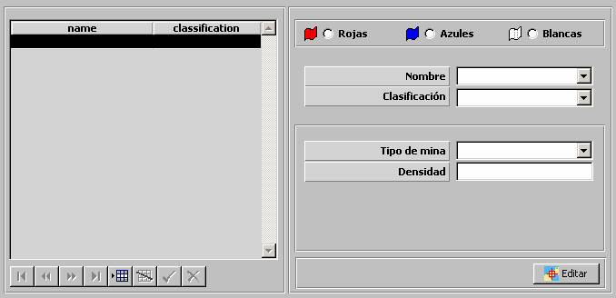

Zonas Minadas

Mediante esta tabla se especifican todas las Zonas Minadas incluidas en el Ejercicio, clasificadas por bando. Durante la ejecución del ejercicio, a cada unidad se le presenta en la Pantalla Táctica las zonas minadas correspondientes a su bando. Además, los parámetros aquí especificados son tenidos en cuenta por el modelo de Zonas Minadas para determinar si las unidades que entran en estas zonas, independientemente del bando al que pertenezcan, son alcanzadas por las minas y por el Modelo de Daños para determinar el daño producido.
Para cada zona se especifican los siguientes parámetros:
Rojo / Azul / Blanco: Bando al que pertenece la Zona Minada.
Tipo de Mina: Este parámetro determina el tipo de mina de Zona Minada. Ver apartado Mina.
Densidad: Este parámetro determina la densidad de minas dentro de la zona minada.
Editar: Mediante este botón se abre la ventana de Preparación de Escenarios, sobre la que se mostrará una Herramienta de Dibujo con la que se podrá especificar gráficamente la zona minada. Ver la descripción de esta herramienta en el apartado Preparación de Escenario.